Top Activities to do in Zanzibar
Zanzibar offers a wide range of exciting activities for every type of traveler. Whether you're seeking adventure, cultural discovery, or peaceful relaxation, the island has something special for you. Below are some of the top activities you can enjoy while exploring this tropical paradise:
1. Beach and Water Activities
- Snorkeling & Diving: Explore vibrant coral reefs and marine life around Mnemba Atoll and other stunning dive sites.
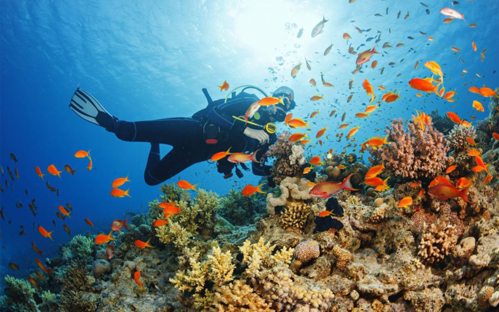
- Dhow Sunset Cruises: Enjoy breathtaking ocean views as you sail into the sunset on a traditional wooden dhow boat.
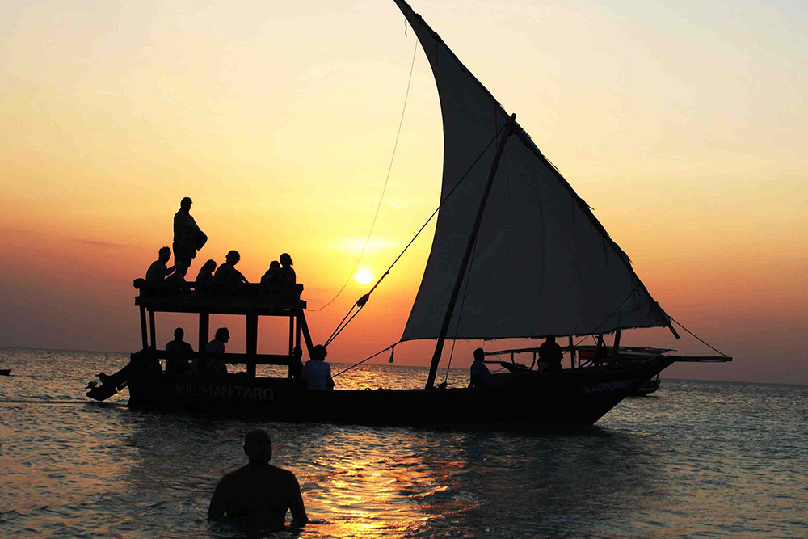
- Swimming & Sunbathing: Relax on white-sand beaches like Kendwa and Nungwi with crystal-clear waters.
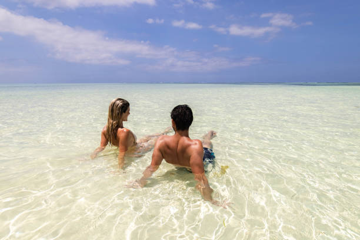
- Jet Skiing, Kayaking & Kite Surfing: For thrill-seekers, Zanzibar's waters offer plenty of action-packed adventures.
2. Cultural Experiences
- Stone Town Tour: Discover the history, architecture, and markets of this UNESCO World Heritage Site.

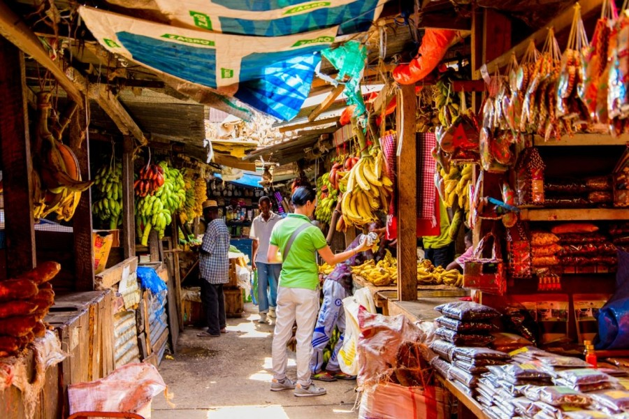
- Spice Tours: Visit spice plantations and learn about Zanzibar’s famous cloves, cinnamon, vanilla, and more.
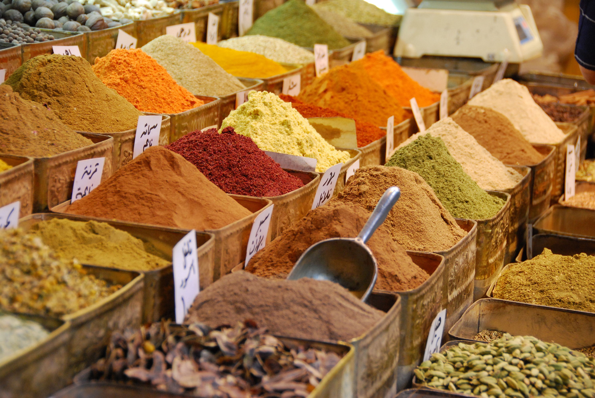
- Local Villages: Experience authentic Swahili culture and hospitality in traditional fishing villages.
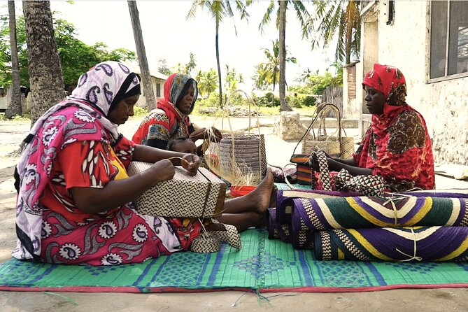
3. Nature and Wildlife
- Jozani Forest: Walk through the forest and spot the rare Red Colobus monkeys and other native species.
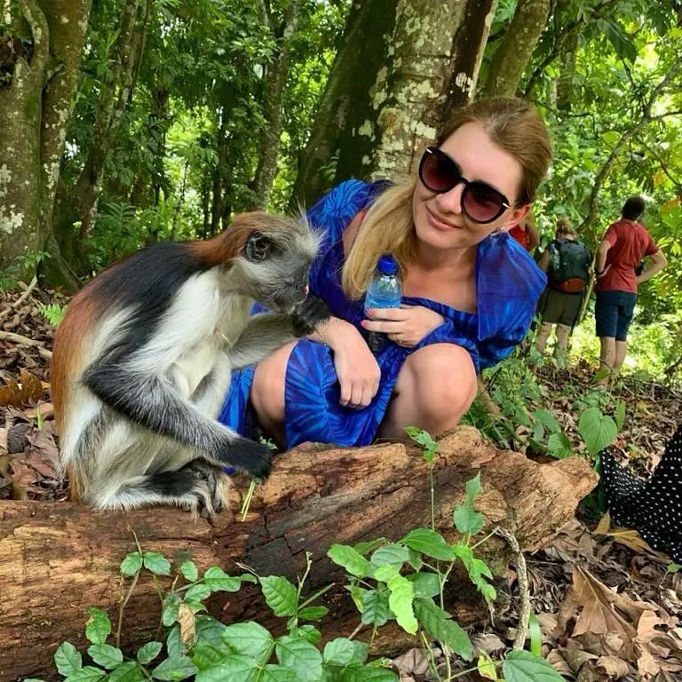
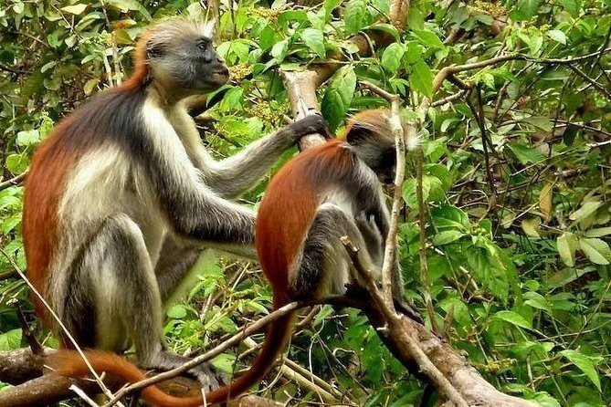
- Prison Island: Visit the historic island and see giant tortoises in a serene island setting.
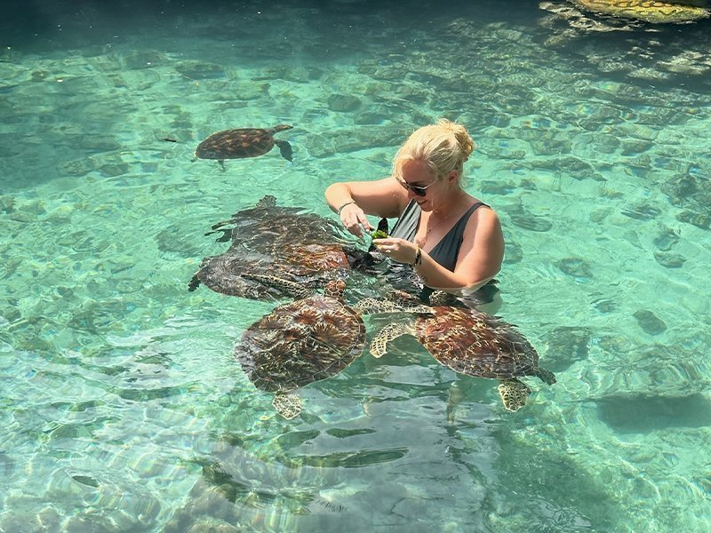
- Dolphin Watching: Take a boat tour to Kizimkazi to see and even swim near wild dolphins.
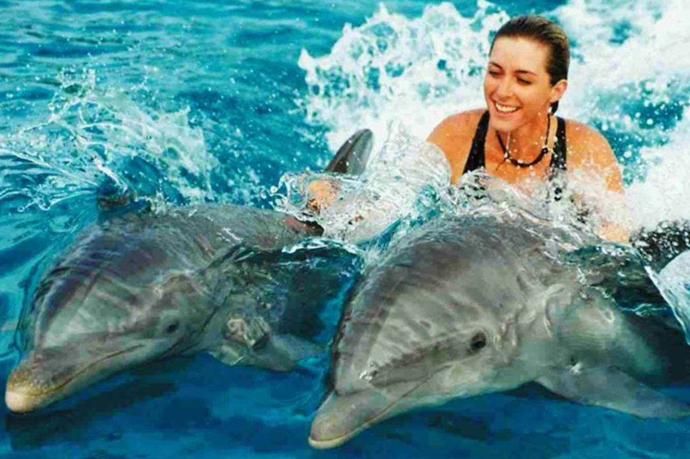
4. Food, Markets & Shopping
- Forodhani Night Market: Taste local street food like Zanzibari pizza, seafood, sugarcane juice, and more.
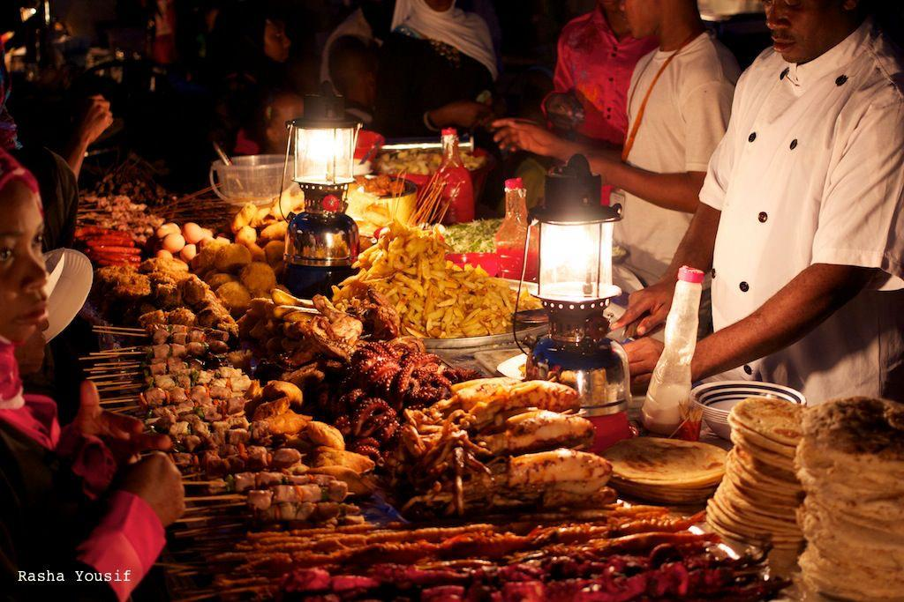
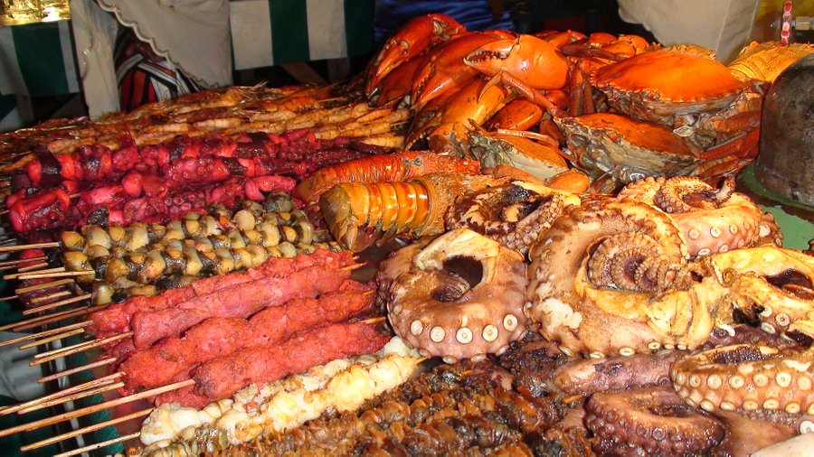
- Spice Shopping: Buy freshly packed local spices and handcrafted souvenirs from local markets.

5. Wellness and Relaxation
- Spa & Massage: Unwind at beachfront spas offering relaxing massages and beauty treatments.
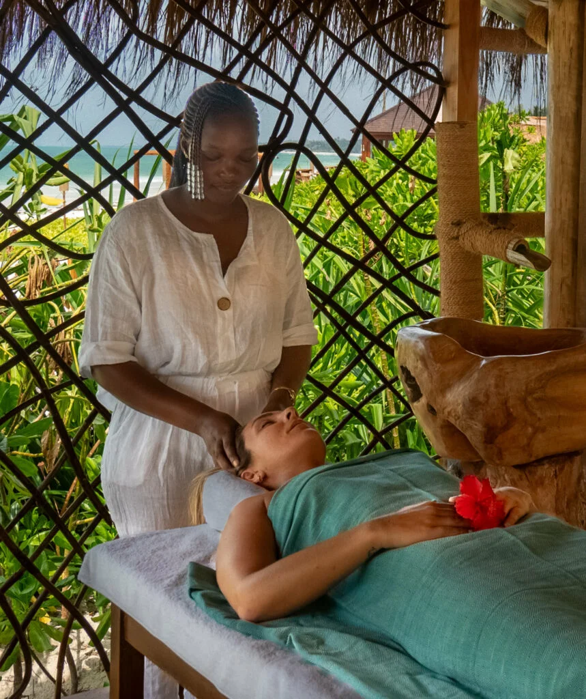
- Yoga Retreats: Join wellness retreats and sunrise yoga sessions by the ocean.
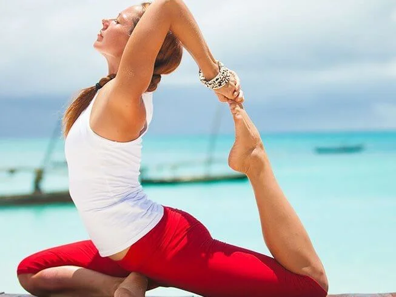
With so many things to do, Zanzibar promises unforgettable memories, whether you're an explorer, a beach lover, or a cultural enthusiast.
Your dream trip starts here Watch Now